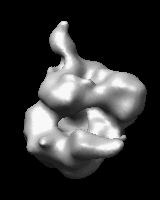

|  |
There are several ways to start Morph Map, a tool in the Volume Data category (including from the Volume Viewer Tools menu). It is also implemented as the command vop morph.
The First map and Second map should be chosen from the adjacent lists of open volume data sets. If the maps of interest are not already open, the Browse... buttons can be used to locate and open them.
Moving the Fraction slider generates the corresponding interpolated state. The morph is opened as new volume data set, and its display settings (threshold level/color, surface smoothing, etc.) can be adjusted in Volume Viewer. At a fraction of 0.0, the interpolated map is the same as the First map, and at a fraction of 1.0, it is the same as the Second map.
Clicking Options reveals
additional settings that can be hidden again by clicking the small button
 on the right.
on the right.
D1(1–fraction) + D2(fraction)calculate intermediate values with:
D1 + D2(fraction)This treats the second map as a delta to be applied to the first map. For example, the second map could represent normal mode fluctuations of the first map.
Record progresses through a single cycle (start to end and optionally back to start), saving an image at each step, and then raises a dialog for specifying: